Aplicaciones y herramientas
Tyba
Es una app de Credicorp Capital respaldada por el BCP que funciona como un gestor de inversiones. Vamos a invertir de manera rapida.
1. Registrate con tu DNI, vinculación de cuenta bancaria (BCP principalmente por la alianza) y test de perfil de riesgo.
2. Algunas veces tienes que esperar un periodo de tiempo (1 semana) para que te validen.
3. Invierte en fondos mutuos, acciones, etc.
Tyba te permite comprar fracciones de acciones. Por ejemplo: Imagina que una accion de toyota esta 220 dolares pero tu solo tienes 100 dolares.
Puedes comprar solo 100 dolares (45.45% aprox)
Si eres nuevo en esto, yo te recomiendo comprar ETFs o fondos mutuos en Tyba ya que ellos gestionan el dinero por ti (gestión pasiva/activa).
Dato: Hay comisiones por retiro o por administración del fondo. Antes de invertir, la app te lo dira.
Dentro de la parte "Plataforma de Acciones y ETFs" hay un "power cash" que tiene un rendimiento del 3% aproximadamente (puede cambiar).
Si no sabes que accion o acciones comprar, entonces puedes poner tu dinero (en dolares) en la app, el dinero va a crecer mientras decides en que accion ponerlo.
Cuando te registres e inicies sesion, vas a tener esto en tu pantalla:
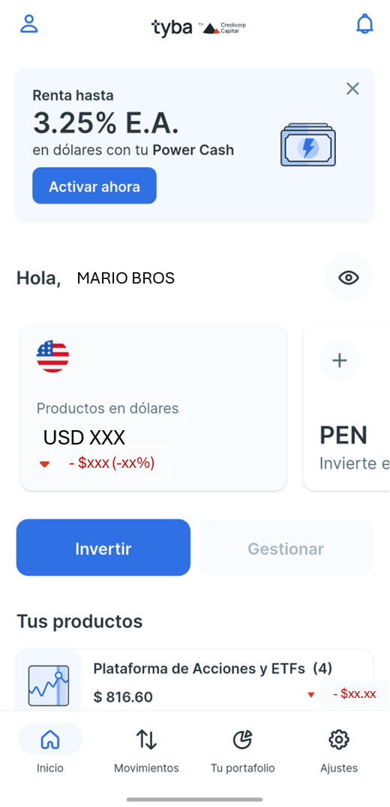
Solo dale al boton de "Invertir" y te saldra algo asi:
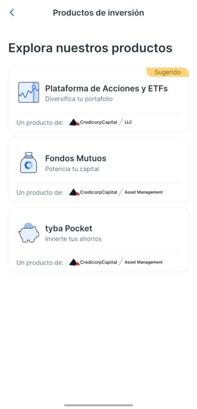
Si eliges fondos mutuos simplemente sigue los pasos.
Si le das a "tyba pocket", debes saber que es un fondo mutuo o fondo de inversión colectivo de renta fija conservador,
ideal para rentabilizar ahorros desde montos muy bajos en soles.
Si le das a "Plataforma de Acciones y ETFs", te saldra esto:
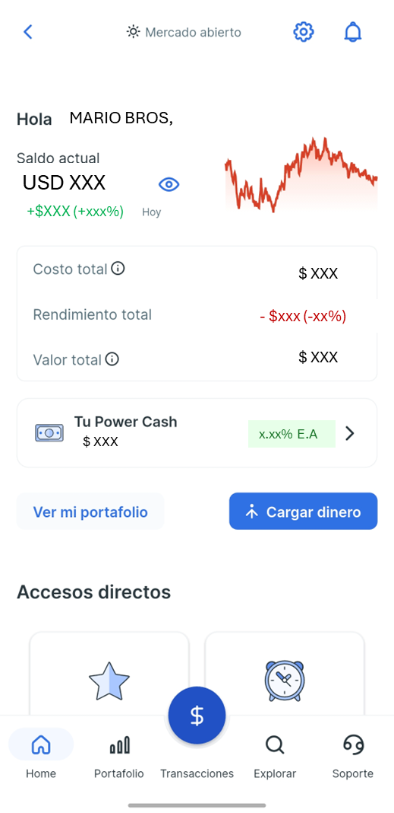
Le das al boton de "Power Cash" te saldra esto:
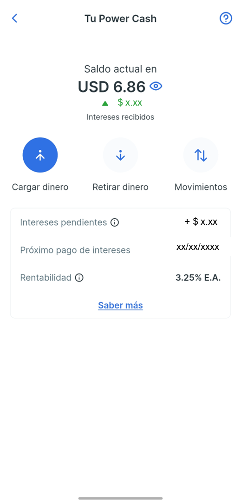
Le das en "Cargar dinero" y pones el monto que quieras (fijate en el costo de envio que es la unica comision)
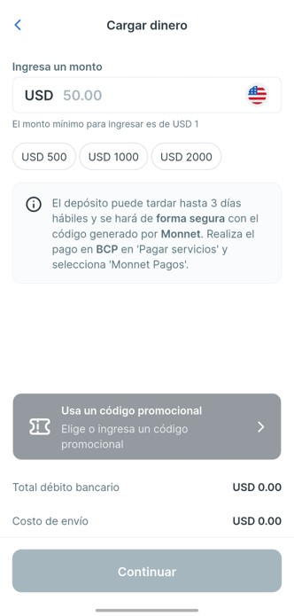
Trii (accede a la BVL)
Trii es una app (similar a Tyba) que nos permite a los peruanos invertir en acciones de la Bolsa de Valores de Lima (BVL) y mercados internacionales.
Respaldada por Kallpa SAB y regulada por la SMV, permite comprar y vender acciones sin montos mínimos obligatorios.
- Permite compra y venta de acciones locales e internacionales, visualización de gráficos en tiempo real, acceso a dividendos y cambio de divisas.
- Cobra tarifas relativamente bajas, por ejemplo, S/ 12.5 por operaciones hasta S/ 2,000, o 0.60% para montos superiores.
Te recomiendo invertir con montos altos. No conviene comprar montos muy pequeños (ej. S/ 50) porque la comisión se "come" la rentabilidad inicial.
1. Igual que tyba, registrate e inicia sesion
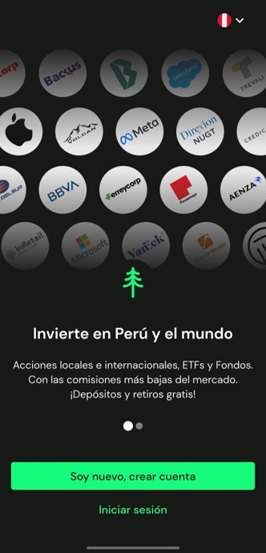
Ahora estamos en la pantalla principal:
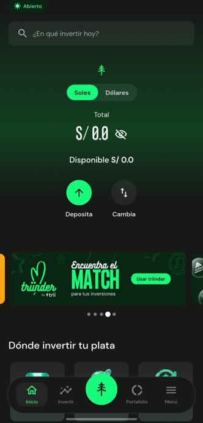
Ya puedes comenzar a invertir!!!
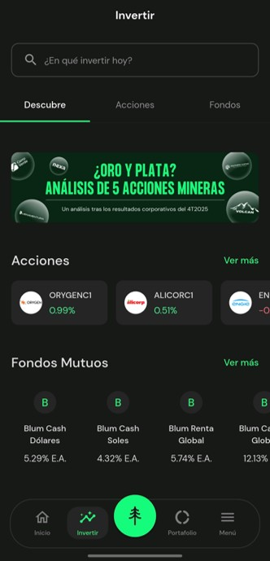
Trii tienen una suscripcion "Triipro", si crees que vas a invertir seguido, entonces puede vale la pena.
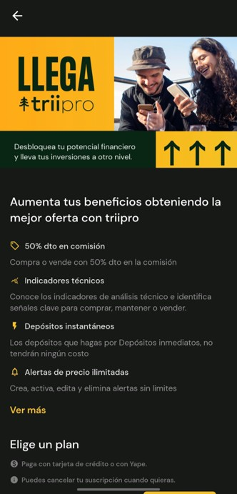
Herramientas utiles:
Rextie
Rextie es una casa de cambio online incluso usada por empresas. Permite cambiar dólares y soles de forma rápida, segura y 100% digital,
con tasas competitivas.
Funciona como pagina web y aplicación para celular, facilitando el cambio de divisas sin necesidad de ir a una oficina física.
- Registrate e inicia sesion, tambien ingresa tus cuentas bancarias. No te preocupes, Rextie es seguro.
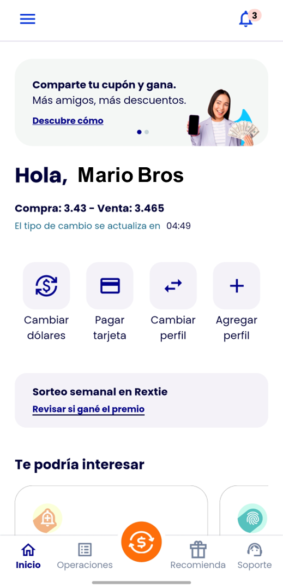
Le das al simbolo que esta abajo en el medio de color naranja y con el simbolo del dolar grande.
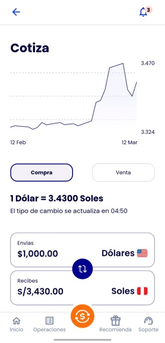
Tambien debes hechar un vistaso a esto, esta informacion es oficial de la pagina de Rextie pero puede cambiar
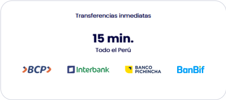
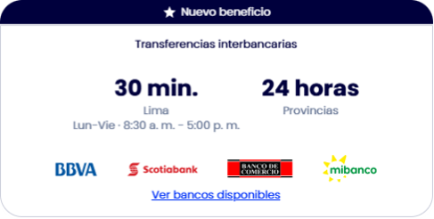
Yahoo Finance /
Investing
Son plataformas para ver el "Histórico" y los "Financials" (balances) de empresas gringas.
Investing es muy bueno para el calendario económico y noticias en español.
Estas plataformas son para usuarios mas avanzados y que quieren profundizar en las empresas para saber que acciones deben comprar.
Cuidado con la Sunat
Invertir no es solo ver cómo suben los gráficos, también es cumplir con las reglas del juego.
En Perú, los impuestos sobre inversiones se dividen principalmente en dos "bolsas" o fuentes.
1. Renta de Fuente Peruana: Son las ganancias que generas usando plataformas locales o invirtiendo en empresas en Perú.
La tasa es generalmente del 5%. Como paga?
- Retención Automática: Aplicaciones como Tyba o Trii suelen retener el impuesto automáticamente antes de entregarte tu ganancia.
- BVL (Bolsa de Valores de Lima): Ahora casi todas tributan el 5%.
2. Rentas de Fuente Extranjera: Son las ganancias por activos de fuera (acciones de EE. UU. como NVIDIA, Apple o ETFs)
comprados en plataformas que no pasan por la BVL.
La tasa no es fija. Se suma a tus ingresos de trabajo (sueldo) y se aplica una escala progresiva que va desde el 8% hasta el 30%.